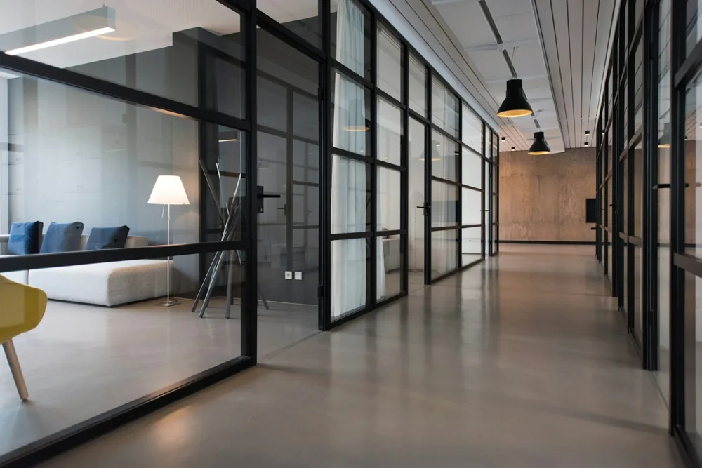

Pular para o conteúdoCOLEÇÃO CONCEITO / V4 — SITE MULTIPÁGINA SOBRE / VÉRTICE
Uma forma de olhar.
Uma forma de fazer.
Critério para decidir. Clareza para seguir.
A FORMA DE FAZER
Antes de qualquer caminho, uma boa conversa.
Entender a situação, organizar as perguntas e esclarecer o atendimento. A forma como começamos faz diferença na qualidade das decisões.
Conheça o percurso 
UMA REFERÊNCIA DE ATMOSFERA / UNSPLASHContexto
Compreender a situação antes de definir o escopo.
02 / PRINCÍPIOClareza
Explicar como o atendimento funciona e quais são seus limites.
03 / PRINCÍPIODiscrição
Combinar um canal apropriado para documentos e informações pessoais.
Conheça o percurso.
Entenda as etapas antes de iniciar o contato.